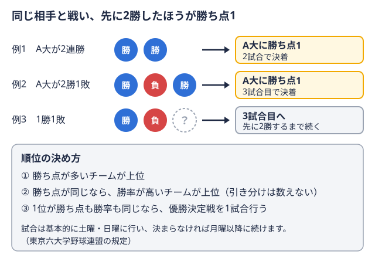

部員向けガイド 2026-11-26
大学野球の盗塁のコツ｜リード・スタート・見極めを練習する順番
盗塁は「足の速さ」だけでは決まらない
「足には自信があるのに、盗塁塁にいる選手が、安打や守備のミスなどによらず、投球の間に次の塁へ進むこと。成功すると盗塁が記録される。 用語辞典で見るのサインが出ない」「スタートを切ったのに、タッチアウトになってしまった」。大学野球で走塁を任される部員は、こうした悩みを抱えることがあります。
用語辞典で見るのサインが出ない」「スタートを切ったのに、タッチアウトになってしまった」。大学野球で走塁を任される部員は、こうした悩みを抱えることがあります。
盗塁は、走者が一塁から二塁へ到達するまでの時間と、投手・捕手・内野手が送球してタッチするまでの時間との競争です。つまり、走者の足の速さだけでなく、リードの取り方、スタートの切り方、相手投手の見極めなど、複数の要素が結果に関わると考えられています。
この記事では、大学野球で盗塁を狙う部員や、代走・走塁担当を目指す部員に向けて、盗塁の技術を分けて練習の順番を整理します。ここで紹介する内容は、公開されている指導者・選手の発言や解説記事を整理したものです。体の状態やチームの方針によって適したやり方は変わるため、実際の練習は監督・コーチと相談して決めてください。
盗塁は「二つのタイムの競争」と考える
高校野球の指導者である伊豆原真人氏（元川和高校野球部監督）は、2026年4月27日付のBASEBALL KINGの記事で、盗塁を「二つのタイムの競争」と説明しています。攻撃側は、一塁走者がリードからスタートして二塁ベースに到達するまで。守備側は、投手が投球動作に入り、捕手が捕球して二塁へ送球し、遊撃手二塁と三塁の間あたりを守る選手。スコアブックでは、守備位置を表す番号「6」で書く。 用語辞典で見るまたは二塁手がタッチするまでです。
用語辞典で見るまたは二塁手がタッチするまでです。
同記事では、捕手の肩だけでなく、投手のクイック、捕手の捕球後のステップ、内野手のタッチまでを合わせて短くすることが重要だと述べられています。これは守備側の話ですが、走者にとっても「相手のどこに隙が生まれやすいか」を考える材料になります。
走者が見るべき相手側の要素
- 投手のクイックモーションの速さ（セットから投球までの時間）
- 投球のリズムが一定かどうか
- 一塁へのけん制の速さと頻度
- 捕手の捕球から送球までの動き
これらを事前に映像やスコアブック試合の経過と選手の成績を、決まった記号を使って書き残す記録用紙。打率などを計算するもとのデータになる。用語辞典で見るで確認しておくと、「どの投手なら走りやすいか」の目安を持ちやすくなります。映像確認の進め方は、大学野球のビデオ判定・映像検証の記事や、データ分析・トラックマンの記事も参考になります。
盗塁の技術は4つに分けて練習する
盗塁の技術は、次の4つに分けると整理しやすくなります。
| 技術 | 内容 | 練習のねらい |
|---|---|---|
| リード | 一塁での構え・体重配分・距離 | けん制に戻れる範囲で、スタートしやすい姿勢をつくる |
| スタート | 一歩目の足の使い方・体の向き | 加速を遅らせない動きを身につける |
| 見極め | 投手のクセ・クイック・けん制の傾向 | 走るか走らないかの判断材料を増やす |
| スライディング | 二塁での滑り込み・タッチを避ける動き | ケガを避けながら、安全にベースへ届く |
リード：戻れる範囲で、走りやすい構えをつくる
リードは、けん制に戻れる安全さと、スタートの切りやすさのバランスで決まります。
ロッテの和田康士朗選手は、ベースボールチャンネルの連載（2022年8月19日公開）で、リードの構えについて次のように話しています。
- 右足に重心を乗せ、左足はほとんど意識しないようにしている
- 重心の配分は、当初は右足にほぼ全部を乗せていたが、けん制への戻りが遅れると分かり、現在は右足6・左足4程度にしている
- けん制がうまい投手に対しては、5対5に微調整している
- 投手の映像を事前に見て、けん制のパターンや速さを頭に入れている
同連載の後半では、一塁と二塁を結んだラインより気持ち後ろに構えることで、一歩目の足が捕手の方向に出て二塁までの距離が増えるのを防いでいる、という説明もあります。また、胸を二塁に向けたほうが速く走れるものの、向きすぎるとけん制で戻れなくなるため、ちょうどいい位置を探していると話しています。
これらはプロ選手個人の感覚であり、そのまま大学生に当てはまるとは限りません。ただ、「重心の置き方や体の向きを、けん制の巧さに合わせて調整している」という考え方は、練習で自分の型を探す際のヒントになります。
リードの練習のしかた
- チームメイトに投手役をしてもらい、けん制に対して戻る練習を先に行う
- 戻れる距離を確認したうえで、構えの重心や向きを少しずつ変えて試す
- 動画を撮り、体の向きや重心が自分の感覚と合っているか確認する
先に「戻る」練習をしておくと、けん制への不安が減り、スタートに集中しやすくなる場合があります。
スタート：一歩目の動きを見直す
スタートは、リードの姿勢から二塁方向へ動き出す一歩目の使い方です。
和田選手は、プロ入り当初は一歩目で重心が浮いてしまい、加速が遅れることが課題だったと話しています。2年目の秋季キャンプでコーチと練習し、右足に重心を乗せて右足で蹴るスタートが最もしっくりきた、とのことです（前掲のベースボールチャンネル連載）。さらに、西川遥輝選手（当時日本ハム）のスタートを動画で見て真似をしたことも語っています。
同じ連載には、「感覚としては蹴るが、二塁方向に体を倒せば自然に蹴る動きが入る」という趣旨の発言もあります。蹴ることを意識しすぎる前に、体を二塁方向へ向ける動きが先にあるという捉え方です。
スタートの練習で確認したい点
- 一歩目で上体が起き上がっていないか
- 足の入れ替えが遅れて、体が二塁方向に向くまで時間がかかっていないか
- 左右どちらの足でも練習し、自分に合う型を見つけているか
スタートの動きは、本人の感覚と実際の動きが違うことがよくあります。動画で横と後ろから撮影し、見返す方法がよく紹介されています。
見極め：走るか走らないかを判断する材料を増やす
盗塁は、スタートを切る「勇気」だけでなく、「走ってよい場面かどうか」の判断も重要です。
和田選手は、投手のクセについて、映像では確認しているものの、一塁にいるときにそのクセが出るかはわからないため、頼りすぎないようにしていると話しています。「クセが出たらラッキー」くらいの気持ちで、そこだけを見ることはしないという姿勢です。
判断材料の例
- 投手のクイックの速さ（セットからの時間）
- 投球のリズムが一定かどうか
- けん制の頻度と速さ
- 捕手の送球の傾向
- 点差・イニング・打者の状況
これらを試合前に整理しておくと、走るかどうかの判断がしやすくなります。スコアブックに投手ごとのけん制の回数や、盗塁を試みた結果を残しておく方法もあります。書き方はスコアブックの書き方ガイドが参考になります。
サインの出し方・見方については、サインの見方・基本ガイドや戦術用語ガイドで整理しています。盗塁がサインなのか、走者の判断に任されているのかは、チームによって異なります。
スライディングとケガの予防
二塁への滑り込みは、タッチをかわしつつベースに届くための技術です。一方で、指先や足首、膝を痛めやすい動きでもあるため、次の点に注意してください。
- 最初は柔らかい地面や、滑りやすいマットなどで基本の形を確認する
- 全力で走る練習の前に、ウォーミングアップを十分に行う
- 痛みや違和感があるときは無理をせず、トレーナーや医療機関に相談する
スパイクの選び方も走塁の安定性に関わります。ポジションや用途に合わせた選び方は、スパイクの選び方ガイドで紹介しています。回復や睡眠の考え方は回復・睡眠のガイドも参考にしてください。
失敗したときの振り返り方
盗塁死が続くと、走ることが怖くなる場合があります。小倉清一郎氏（元横浜高校野球部部長）は、2025年8月14日付の日刊ゲンダイの連載で盗塁を取り上げています。同連載の続きのページには、失敗した選手を叱るのではなく、原因を確認する姿勢についての記述があります。
チームで振り返るときは、次のように原因を分けると整理しやすくなります。
- スタートが遅れたのか（リード・一歩目）
- 相手の投手・捕手の動きを見誤ったのか（見極め）
- 状況として走る場面ではなかったのか（サイン・判断）
- 二塁での滑り込みやタッチ対応に問題があったのか
「足が遅いから失敗した」と決めつけず、要素を分けて確認すると、次の練習で何を直せばよいかが見えやすくなります。
2026年のNPBの盗塁リーダーズを見てみる
盗塁の技術を考えるうえで、プロの盗塁数も一つの参考になります。NPB日本野球機構の略称。プロ野球を運営する団体で、ドラフト会議の主催もしている。用語辞典で見る公式サイトの「2026年度 盗塁リーダーズ」では、次のとおりです（執筆時点の掲載内容です）。
| リーグ | 1位 | 2位 | 3位 |
|---|---|---|---|
| セントラル・リーグ | 岩田幸宏（ヤクルト）39 | 浦田俊輔（巨人）36 | 辰見鴻之介（広島）28 |
| パシフィック・リーグ | 周東佑京（ソフトバンク）30 | 庄子雄大（ソフトバンク）22 | 渡部遼人（オリックス）18 |
出典：NPB公式サイト セントラル・リーグ 盗塁リーダーズ、パシフィック・リーグ 盗塁リーダーズ
プロの数字を見ると、リーグごとに盗塁数に開きがあることがわかります。ただ、プロの環境と大学野球は、投手の質、走者に求められる役割、チームの戦術が異なります。数字は技術を考える一つの材料として捉えてください。
大学野球の試合を観て、走塁を学ぶ
盗塁の練習は、自分の動きだけでなく、他チームの走塁を観察することでも深められます。
- どの場面で走者がスタートを切っているか
- リードの大きさや構えの向きは、投手によって変わっているか
- けん制のあと、走者はどのようにリズムを取り戻しているか
当サイトでは、東京六大学野球・東都大学野球などの順位表・日程・打撃成績を掲載しています。接戦が続くカード同じ2チームが、勝ち点をかけて続けて行う試合のまとまり。東京六大学では、どちらかが2勝するまで同じ相手と戦う。 
順位表や成績は連盟公式サイトの情報をもとにしています。配信の見方は大学野球の中継・配信ガイドをご覧ください。
練習計画の立て方の一例
最後に、盗塁の練習を組み立てるときの考え方を一例として示します。チームの練習時間や自分の課題に合わせて調整してください。
- 現状を把握する：試合で走った回数・成功/失敗を記録し、原因を4つ（リード・スタート・見極め・滑り込み）に分けて振り返る
- スタートを動画で確認する：横と後ろから撮影し、一歩目の動きを見直す
- けん制への戻りを先に練習する：戻れる距離を確認してからリードを調整する
- 投手の映像を見る習慣をつける：対戦前に、クイックやけん制の傾向をメモする
- 疲労と痛みの記録をつける：違和感が続く場合は、早めにトレーナーに相談する
まとめ
- 盗塁は、走者の足の速さだけでなく、リード・スタート・見極め・スライディングの組み合わせで考える
- 盗塁は「二つのタイムの競争」であり、相手投手・捕手・内野手の動きを知ることが判断の材料になる
- プロ選手の例では、重心の置き方や体の向きを、けん制の巧さに合わせて調整している
- 失敗したときは、原因を分けて確認すると、次の練習で直す点が見えやすい
- 痛みや違和感があるときは無理をせず、トレーナーや医療機関に相談する
盗塁は、結果が数字で残るため悩みやすい技術です。自分の課題を整理し、順番に取り組むことで、少しずつ試合での判断に自信を持てるようにしていきましょう。
この部活・競技を応援したい方へ
協賛・応援はこちらから。
取材してほしい部活を募集中
あなたの部活・チームを取材してほしい方はこちらから。
部活を続けながら、就活も進めたい方へ
体育会の学生のための就活相談です。無料で、メールアドレス・学年・所属の入力だけで始められます。